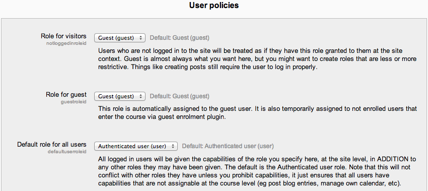
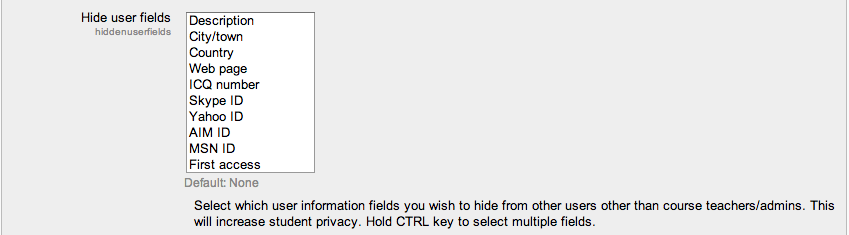

This is where you can select what actions are taken in specific role circumstances, for example, if someone wishes to sign in as a guest the default role allocated to that person can be specified.
The following settings may be changed by an administrator in Administration > Site administration > Users > Permissions > User policies.
Role for visitors Users who are not logged in to the site will be treated as if they have the role specified here, granted to them at the site context. The role of Guest is the default and the recommended setting for standard Moodle sites. The user will still be required to login to participate in an activity.
Role for guest This option specifies the role that will automatically be assigned to the guest user. This role is also temporarily assigned to non enrolled users when they enter a course that allows guests without password.
Deny Guest Access to a site altogether Go to Site administration ► Plugins ► Authentication ► Manage authentication and there is a switch there that allows you to turn the Guest Access button off altogether.
Default role for all users It is recommended that the default role for all users is set to Authenticated user. To set it to a custom role, the custom role must be assignable in the system context and have role archetype set to none.
Auto-login guest If not set, then visitors must click the “Login as a guest” button before entering a course which allows guest access. Note: If auto-login guest is set, the guest login button also needs to be set to show (in Administration > Site administration > Plugins > Authentication > Manage authentication), even though visitors won’t necessarily use it.
Hide user fields The following user fields appear on users’ profile pages. Certain user fields are also listed on the course participants page. You can increase student privacy by hiding selected user fields. Description, city/town, country, web page, ICQ number, Skype ID, Yahoo ID, AIM ID, MSN ID, last access, My courses and first access and groups.
Show user identity Any of the following fields may be shown to users with the capability moodle/site:viewuseridentity when searching for users and displaying lists of users.
- ID number
- Email address
- Phone number
- Mobile phone
- Department
- Institution
This setting is useful for sites with large number of users, where the likelihood of users with the same name is high.
Maximum users per page You can choose here the maximum number of users to be displayed when searching in courses, groups, cohorts etc. The default is 100 but if your Moodle site is very large you can increase the number here.
Enable Gravatar Gravatar (an abbreviation for globally recognized avatar) is a service for providing globally unique avatars.
Gravatar default image URL If gravatars are enabled, an alternative default user picture may be specified. The options are:
- A gravatar default image.
- A specified image - by entering the image URL
If the field is left empty then the theme’s default user picture is used.